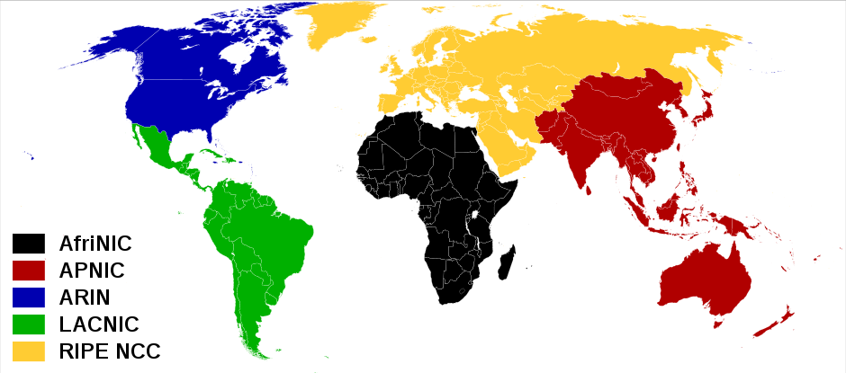

There are 2x subnets in a network, where x is the number of borrowed subnet bits.
There are 2h-2 usable hosts in a network, where h is the number of host bits.
The block size for a subnet is 256-subnet mask value. Start at zero and count in block sizes. Every block size will be a new network address.
The broadcast address is one less than the next network address. Count in block sizes.
The usable hosts are between the network address and the broadcast. So the usable hosts the block size plus one through the next block size minus two.
Confused? The best way to learn subnetting is to practice! Start with the basics and go from there.
Learning how to subnet accurately and quickly are keys to success in the IT field and also to passing IT certifications, such as the CCNA. We subnet to avoid having one large network. A single giant network would be an unmanageable mess.
All subnetting is done in binary, however, because we humans are used to a base-ten system, we translate things into decimal numbers. This makes life a lot easier. It is important to understand the binary behind the decimal. Without understanding the binary, it is difficult to understand why we calculate network masks, broadcast addresses, etc. the way we do.A binary digit is called a bit. It represents a 1 or a 0. An IPv4 address has 32 bits, and an IPv6 address has 128 bits, but let's stick with IPv4 for now. Each IPv4 address is split up into four octets separated by periods. Each bit represents a power of 2. An octet is a group of 8 bits and can have a value ranging from 0 to 255. If you do not know how to count in binary, or convert binary into decimals, and vice versa you should check out the Binary Practice page.
OK, so an IP address is 32 bits. This address is then divided into two parts, the subnet bits and the host bits. The subnet bits show what network a device is on, and the host bits define the individual device. Think of a telephone number, you have an area code and then the number. The area code can be thought of as the subnet bits. Many people who live near one another share an area code, but they all have an individual phone number. The same is of devices on a subnet. They all share the same subnet bits, but then each one has an individual combination of host bits.
The way we know which part of the IP address is the subnet bit part and which part is the host bit part is using a subnet mask. A subnet mask (or net-mask) is made up of 32-bits, like a regular IP address, but is used only to divide the subnet bits from the host bits. The subnet bits are all 1s and the host bits are all 0s. So a subnet mask might be 11111111.11111111.1111111.00000000, which in decimal should be 255.255.255.0. This would specify that any IP address with that subnet mask will have the first three octets be used as subnet bits, and the last octet will be used for host bits.
You can have subnets inside of subnets. That's essentially what subnetting is; dividing blocks of IPs into smaller blocks. To do this you 'borrow' bits from the host range and add them to the subnetting bits. For example, you can split the above 255.255.255.0 into 4 subnets with the subnet mask of 255.255.255.192. "Wait, what??" Well, lets look back at the binary subnet mask for 255.255.255.0: 11111111.11111111.11111111.00000000. We can 'borrow' two bits from the host bits and create a net subnet mask of 11111111.11111111.11111111.11000000. Changing those two bits from 0s to 1s makes the last octet equal to 192. (Don't get it? Practice your Binary.) By 'borrowing' those bits you can now create four new subnets within your original subnet. Why four? Because those two bits have four different possible combinations. You can have 00, 01, 10, 11. This number will always be 2x where x is the number of 'borrowed' subnet bits.
Now we know how many subnets we can create, but how many IPs does each subnet have? That is calculated the same way, only using the host bits. We have 6 host bits left (all the zeros) so we just find 2y where y is the number of host bits. 26=64. But wait! That is how many IPs a subnet has, not how many usable hosts a subnet has. Every subnet must have a network address and a broadcast address, and neither of those can ever be used by a host. So the usable hosts is actually 2y-2 where y is the amount of host bits. In this case there are 62 usable bits per subnet. As you can see, learning your powers of two is key to subnetting quickly.
The network address is used to identify the network that you are working on and the broadcast IP is used to send messages to every device on that subnet. The network address is always the very first IP address of a subnet, and the broadcast is always the very last IP address of a subnet. In other words, for a network address is the IP address where all the host bits are set to 0 and the broadcast address is the IP address where all the host bits are set to 1.
Though the class system of IP ranges has been replaced by CIDR, many people still talk about the five classes of IP address range. Only three are really important.
Class A addresses use the first octet for networking and the last three octets as host bits. The first octet range is 1-126 (or any ip address where the first bit is a 0).
Class B addresses use the first two octets for networking and the last two for host bits. The first octet range is from 128-192 (the first two bits are 10).
Class C addresses use the first three octets for networking and the last octet for host bits. The range of the first octet is 192-223 (the first three bits are 110 in binary).
There are also Class D and E addresses which go from 224-239 and 240-255 and are used for multicast and experimental uses, respectively.
Private IP ranges are:
| Class | Size | Subnet Mask | Range of IPs |
| Class A | 10.0.0.0/8 | 255.0.0.0 | 10.0.0.0 - 10.255.255.255 |
| Class B | 172.16.0.0/12 | 255.240.0.0 | 172.16.0.0 - 172.31.255.255 |
| Class C | 192.168.0.0/16 | 255.255.0.0 | 192.168.0.0 - 192.168.255.255 |
You may also want to read up on IPv6.
IPv6 is going to replace IPv4. The simple reason is that IPv4 address space is running out. The world has reached the point where there are not enough 32 bit addresses to link every device which wants to connect to the Internet. IPv6 uses 128 bits. Much larger. Much much larger. IPv6 allows almost 8*1028 times as many addresses as IPv4. Basically, a number too large for the human mind to grasp.
Because of the enormity of IPv6 address space, subnetting will change. Currently we use CIDR and VLSM and NAT and other tools to conserve as much IPv4 space as possible. With IPv6 this is no longer a concern. The smallest subnet that is recommended for use in IPv6 is a /64! This means that even if you have 200 devices on a single /64, you still have 264-200 of unused space.
Because of the scale of IPv6, one no longer really worries about how many hosts are on a subnet. Rather the concern is how many subnets fit within a certain network. If you have a /48, how many /64s can you place inside this /48? These are the questions that IPv6 subnetting asks.
IPv6 is written in hexadecimal which uses the digits 0-9 and a-f. A hexadecimal digit represents 4 bits, or 16 decimal units. Each IPv6 address is represented by eight groups of four hexadecimal digits. These groups are separated by colons. An example may be: 2001:0db8:2231:aaec:0000:0000:4a4a:2100. Try practicing binary.
Even though these addresses are written in hexadecimal units, they are still large and cumbersome. There are a couple of ways to shorten them. One or more leading zeros from each group can be dropped. A consecutive set of groups with only zeros can be replaced with ::. The above address can be written as: 2001:db8:2231:aaec::4a4a:2100.
Note that the :: should only be used on more than one section of zeros, and can only be used once per address. 2001::ab32:: is not a valid address because we do not know how many sets of zeros are in each :: group. The address could be 2001:0000:0000:ab32:0000:0000:0000:0000 or it could be 2001:0000:0000:0000:0000:ab32:0000:0000.
Though the representation of the numbers is different, the computer still uses binary to do the actual subnetting. The binary math is the same, it is just using larger numbers. There is still a network portion and a host portion of every address.
IPv6 does not use network addresses or broadcast addresses. An address where the host bits are all 0s or all 1s is still valid!
We also do not use subnet masks for IPv6. Everything is written in slash notation. In IPv6 the first 48 bits are used for networking and routing. The next 16 and used to define subnets. The last 64 and used to identify a host.
With IPv6 is that every device can create a unique link local address based on the MAC address of the device. What one does is inset 0xFFEE into the middle of the MAC address. This changes the MAC address to 64-bits from 48-bits. The other thing that needs to happen is to flip the 7th bit. A link local unicast address is fe80::/10
The number of subnetting bits is the new prefix length minus the original prefix length. So there are 4 subnetting bits when a /48 is broken into /52s (52-48=4).
The number of subnets possible with x subnetting bits is 2x. So if we have 4 subnetting bits, then we can create 24=16 new subnets.
::1/128 is the loopback address.Our subnetting cheatsheet includes IPv6.
IPv6 addresses should be written a certain way. This will make interpreting the addresses faster and easier, both for humans and for computer programs.
Leading zeros must be removed. 2001:0db8::0001 must be written as 2001:db8::1.
"::" must be used to represent the largest number of 16-bit sets of zero as possible.
If there are multiple places where "::" can be used, and the numbers of zeros are the same, use "::" on the leftmost set of zeros
"::" cannot be used to shorten a single 16-bit set of zeros.
Letters in an IPv6 address should be written in lowercase.
To represent port numbers, wrap an IPv6 address in square brackets then followed by a colon and the port number as [2001:db8::1]:80
For more information see RFC5952.
|
CIDR |
Subnet Mask |
Total IPs |
Usable IPs |
| /32 | 255.255.255.255 | 1 | 1 |
| /31 | 255.255.255.254 | 2 | 2* |
| /30 | 255.255.255.252 | 4 | 2 |
| /29 | 255.255.255.248 | 8 | 6 |
| /28 | 255.255.255.240 | 16 | 14 |
| /27 | 255.255.255.224 | 32 | 30 |
| /26 | 255.255.255.192 | 64 | 62 |
| /25 | 255.255.255.128 | 128 | 126 |
| /24 | 255.255.255.0 | 256 | 254 |
| /23 | 255.255.254.0 | 512 | 510 |
| /22 | 255.255.252.0 | 1024 | 1022 |
| /21 | 255.255.248.0 | 2048 | 2046 |
| /20 | 255.255.240.0 | 4096 | 4094 |
| /19 | 255.255.224.0 | 8192 | 8190 |
| /18 | 255.255.192.0 | 16,384 | 16,382 |
| /17 | 255.255.128.0 | 32,768 | 32,766 |
| /16 | 255.255.0.0 | 65,536 | 65,534 |
| /15 | 255.254.0.0 | 131,072 | 131,070 |
| /14 | 255.252.0.0 | 262,144 | 262,142 |
| /13 | 255.248.0.0 | 524,288 | 524,286 |
| /12 | 255.240.0.0 | 1,048,576 | 1,048,574 |
| /11 | 255.224.0.0 | 2,097,152 | 2,097,150 |
| /10 | 255.192.0.0 | 4,194,304 | 4,194,302 |
| /9 | 255.128.0.0 | 8,388,608 | 8,388,606 |
| /8 | 255.0.0.0 | 16,777,216 | 16,777,214 |
| /7 | 254.0.0.0 | 33,554,432 | 33,554,430 |
| /6 | 252.0.0.0 | 67,108,864 | 67,108,862 |
| /5 | 248.0.0.0 | 134,217,728 | 134,217,726 |
| /4 | 240.0.0.0 | 268,435,456 | 268,435,454 |
| /3 | 224.0.0.0 | 536,870,912 | 536,870,910 |
| /2 | 192.0.0.0 | 1,073,741,824 | 1,073,741,822 |
| /1 | 128.0.0.0 | 2,147,483,648 | 2,147,483,646 |
*See rfc 3021
| Class | Size | Subnet Mask | Range of IPs |
| Class A | 10.0.0.0/8 | 255.0.0.0 | 10.0.0.0 - 10.255.255.255 |
| Class B | 172.16.0.0/12 | 255.240.0.0 | 172.16.0.0 - 172.31.255.255 |
| Class C | 192.168.0.0/16 | 255.255.0.0 | 192.168.0.0 - 192.168.255.255 |
|
Prefix |
/48s |
/56s |
/64s |
| /24 | 16M | 4G | 1T |
| /25 | 8M | 2G | 512G |
| /26 | 4M | 1G | 256G |
| /27 | 2M | 512M | 128G |
| /28 | 1M | 256M | 64G |
| /29 | 512K | 128M | 32G |
| /30 | 256K | 64M | 16G |
| /31 | 128K | 32M | 8G |
| /32 | 64K | 16M | 4G |
| /33 | 32K | 8M | 2G |
| /34 | 16K | 4M | 1G |
| /35 | 8K | 2M | 512M |
| /36 | 4K | 1M | 256M |
| /37 | 2K | 512K | 128M |
| /38 | 1K | 256K | 64M |
| /39 | 512 | 128K | 32M |
| /40 | 256 | 64K | 16M |
| /41 | 128 | 32K | 8M |
| /42 | 64 | 16K | 4M |
| /43 | 32 | 8K | 2M |
| /44 | 16 | 4K | 1M |
| /45 | 8 | 2K | 512K |
| /46 | 4 | 1K | 256K |
| /47 | 2 | 512 | 128K |
| /48 | 1 | 256 | 64K |
| /49 | 128 | 32K | |
| /50 | 64 | 16K | |
| /51 | 32 | 8K | |
| /52 | 16 | 4K | |
| /53 | 8 | 2K | |
| /54 | 4 | 1K | |
| /55 | 2 | 512 | |
| /56 | 1 | 256 | |
| /57 | 128 | ||
| /58 | 64 | ||
| /59 | 32 | ||
| /60 | 16 | ||
| /61 | 8 | ||
| /62 | 4 | ||
| /63 | 2 | ||
| /64 | 1 |
XXXX:XXXX:XXXX:XXXX:XXXX:XXXX:XXXX:XXXX
||| |||| |||| |||| |||| |||| ||||
||| |||| |||| |||| |||| |||| |||128
||| |||| |||| |||| |||| |||| ||124
||| |||| |||| |||| |||| |||| |120
||| |||| |||| |||| |||| |||| 116
||| |||| |||| |||| |||| |||112
||| |||| |||| |||| |||| ||108
||| |||| |||| |||| |||| |104
||| |||| |||| |||| |||| 100
||| |||| |||| |||| |||96
||| |||| |||| |||| ||92
||| |||| |||| |||| |88
||| |||| |||| |||| 84
||| |||| |||| |||80
||| |||| |||| ||76
||| |||| |||| |72
||| |||| |||| 68
||| |||| |||64
||| |||| ||60
||| |||| |56
||| |||| 52
||| |||48
||| ||44
||| |40
||| 36
||32
|28
24
| Bit | 1 | 1 | 1 | 1 | 1 | 1 | 1 | 1 | Bit Value | 128 | 64 | 32 | 16 | 8 | 4 | 2 | 1 |
An IP calculator may be more useful.
You will learn all this by simply practicing subnetting
If you are studying for the CCNA, you may also be interested in mastering your IPv4 and IPv6 header information and a good CCNA book
.
An IP datagram is a packet of data made up of two parts; the header and the payload. The payload is the data being sent, and usually used by a higher level application. The header is the IP information used by the IP. You can think of IP similar to a letter. A letter comes with two parts, the actual letter meant to be read by the recipient, and the envelope, which directs the post office on where to send the letter. The header is like the envelope.
Like a letter, the post office uses the information on the envelope to see where a letter is coming from and where it is going. You can also judge to see if the letter has been torn or damaged by looking at the envelope. If there are water stains and damage to the envelope, then the letter is probably damaged, and might need to even be re-written. The envelope will also give you hints as to what kind of letter you are getting. Is it a formal looking envelope from a business or a hand written letter from a friend?
An IP header contains similar information. It includes the source and destination addresses, error checking along with other information which helps deliver data across a network.
An IPv4 header has a larger number of fields than the more modern IPv6 headers. It begins with a version number. For an IPv4 packet, this will be the number 4. This field tells the IP protocol what version of the IP protocol is being used on this particular piece of data.
Next comes the Internet Header Length (IHL), which is 4 bits long and specifies the header length. The header length can range from 160 to 480 bits and is always a multiple of 32 bits. IPv4 needs to specify the header length due to the different options which can be added to the header.
Next comes the Type of Service or Differentiated Services Code Point (DSCP) field. This field is largely used for quality of service features such as determining the priority of a packet. For example, a voice over IP packet may be given higher priority over an HTTP packet.
Total Length is a 16-bit field used to define the length of the whole packet, including the header and the payload. This can range from 20 bytes of 65,535 bytes.
Identification contains a 16-bit value common to all fragments of a message. This is used to reassemble fragmented messages.
Flags specify whether a packet has been or is allowed to be fragmented.
Fragment Offset specifies where in a fragmented message this particular fragment occurred.
Time To Live specifies how many hops the packet can cross before being dropped. This prevents a packet from being sent back and forth forever.
Protocol identifies which higher-layer protocol is being carried in the data. Possibilities include TCP, UDP and ICMP.
The Header Checksum is a basic method of error detection. It is used to see if the header data was corrupted during transmission of the packet.
The Source Address and the Destination Address specify the originating and destination IP addresses for the packet.
Options is a rarely used field of several types of additional options.
Padding is used to make sure that the total header size is a multiple of 32 bits. Following all this comes the actual data inside the packet.
Like IPv4, IPv6 headers start with the Version number. The value 6 identifies the packet as an IPv6 packet.
This is followed by the Traffic Class. The Traffic Class specifies the priority of the packet by assigning a certain class to that packet. For example, a voice packet is probably going to have a higher priority than a data packet due to lag on voice communication being more noticeable.
This is followed by a Flow Label. Packets which belong to the same Flow Label should be routed through the same path. Packets with different Flow Labels can be routed to the same destination using different paths.
The Payload Length specifies the size of the post-header data.
The Next Header identifies the type of header immediately following the IPv6 header, for example a TCP or UDP header.
Hop Limit replaces the IPv4 Time to Live data. This specifies how many hops the packet can take before being dropped.
Source Address and Destination Address specify what IP address the packet originated from and what IP address it is being sent to.
Test your knowledge of IP header fields and the header order.
The top commands to know for the CCNA are variations of the 'show' command. Common simulator questions present you with a set of configured devices and ask you to find information about these devices. You must know how to search through a router or switch and find the relevant information. Knowing these commands will not only help you succeed at the CCNA but will be immensely helpful when working with a router whose configuration you do not have documented or memorized. Without further ado, the most useful Cisco commands are:
The 'show run' command is by far the most useful 'show' command you will come across. It gives you a page by page report on how the current device is setup. This include interface information such as the IP address, if the interface is shutdown, etc. You can also see the device-wide information such as which passwords are set, if SSH or telnet is setup and ready for login, etc. You can see when the configuration was last updated and saved along with VLAN information. Basically, if there is a piece of information you do not know, and are unsure how to find that information, start with the 'show running-configuration' command. There is a good chance it will have what you are looking for.
This command will show you detailed information about the interfaces on the device. The command as simply 'show int' alone will display information about each configured on the device, one after the other. If you are looking for information on a specific interface you can input the type and number of the interface to get information about only that one interface, for example 'show int fa 0/1' will only show information about FastEthernet 0/1.
The output of this command includes the MTU size, the bandwidth label, the mac-address, the IP address, the subnet mask, and the errors on the interface. The detailed error report from 'show interfaces' makes this the go-to command when you are having routing issues. You will see not only the number of errors, but the specific type of error, such as giants or collisions or runts, and this will allow you to have an idea of where the problem may be coming from. If you are seeing connection issues, try the 'show int' command.
'Show ip route' will display the routing table which is used to find where to send data. This is what you would use to see the next hop for every packet. This is a layer-3 command. It shows which interface will send out a packet destined for a certain IP address. This command will also tell you how the device learned of that route. You can find out if the route is directly connect, static, or learned through a routing protocol such as OSPF of RIP. You can be most specific with this command by including the protocol you are interested in, for example 'show ip route ospf' will display OSPF routes. If you ever need to know which interface is responsible for reaching a certain network, use this command.
The 'show ip int' command will give a detailed layer-3 report of an interface. Like the 'show interfaces' command, you can specify a specific interface to look at such as 'show ip int g 0/2'. This command will show information such as the incoming and outgoing access list, the IP address and the network mast. The command 'show ip interface brief' is also extremely useful for quickly seeing which interfaces are up and what IP address is assigned to each interface. This is a quick and concise way to see what the basic interface status looks like.
This command will display the access-lists on the device. This includes every line of the access-list, but does not display which interface that access-list is applied to. To see where an access-list is applied, you will want to run the 'show ip interface' or 'show run' commands. Note that the 'show access-list' command shows access lists for all protocols, whereas 'show ip access-list' only shows IPv4 access-lists and may exclude other existing access-lists, such as IPv6 access-lists. Remember that each access list has a unstated last command of 'deny any'. Use the 'show access-list' command to see exactly what an access-list is doing.
'Show cdp neighbor detail' will display information about Cisco devices connected to the device you are on. It is a layer-2 command, so this includes information about switches and even phones. CDP is a Cisco proprietary protocol, so the command will only show information about Cisco devices. The information includes the remote device type, the remote IP address, the remote interface connected to the device you are on, and the remove device ID. This is a great command for when you need to figure out what other types of devices you are connected to. Say you find a switch in a closet somewhere and have no idea where all the cables from that switch go. You can type 'show cdp neighbor detail' and see what type of device each interface is connected to. No need to go tracing wires throughout the building. The 'show cdp neighbor' command will show much (but not all) of the same information in a more concise format.
The display from this command will show you the information and status of VLANs on the device. This includes the VLAN names, numbers, and the interfaces on which each VLAN can be found. If a certain interface is not listed in this command, that interface is a trunk. Use this command to see which VLANs are active and on which ports.
Use the 'show interface trunk' command to view all the trunk ports on the device. The display will include information on which VLANs are allowed on which trunk, what the native VLAN is. Use this command to see which ports are used for trunking and which VLANs are allowed to pass through those trunks.
This command displays information about Layer 3 protocols on the Cisco device. These include RIP, OSPF and EIGRP. While these protocols have their own specific show commands, the 'show ip protocols' gives a large amount of detail on all running protocols at once. It includes routing information and is often the first Cisco command to run when troubleshooting routing problems due to Network Layer protocols misconfiguration. For IPv6 use 'show ipv6 protocols'
The above Cisco commands should be enough to find most details on what a networking device is doing and how it is setup. These are obviously not the only commands you should know and the CCNA is not limited to only 'show' commands. The above are a great start to any kind of troubleshooting you may need and are often going to be some of the first commands you will run.
The amount of IPv4 space is just about used up. That means IPv4 addresses are scarce resources. Scarcity can limit future expansion of the Internet. Those who wish to connect to the world, but do not have a global IP address, cannot do so. This is especially true in the developing world, which has less IPv4 space allocated to it. A transition to IPv6 removes this scarcity and balances the IP addresses allocated to each continent.
Countries and continents which have not had large access to Internet infrastructure have received less IPv4 addresses than countries where the global Internet was rapidly adopted. IPv4 addresses have been allocated based on how many IPs were used up in each region. If a continent was using most of its IP addresses, then it was likely to get a new block. What this means is that developed countries, which connected to the Internet early and in larger numbers have more IPv4 addresses to use, reuse and reallocate. If the world were to stay with IPv4, the lack of IP addresses allocated to the developing world would create a bottleneck and barrier to the development of Internet technologies in those countries.
IP address space is distributed by the Internet Assigned Numbers Authority (IANA). The IANA distributed blocks of IPs (usually a /8) to a Regional Internet Registry (RIR) who then distributes it out to Internet Service Providers and others. RIRs are:

As you can see the USA and Canada alone take up almost half the IPv4 allocation of the whole world, while Africa and Latin America have small slivers of IP space. IPv6 is a whole new ball game. First off, the sheer size of IPv6 address space is so gigantic that most of it has not been allocated at all and is reserved.
The small slices are all the world's IPv6 allocation so far.
Each RIR has been assigned a /12 along with a few /23s and other blocks. There has been little need to request more space than these /12s, and because of this, IPv6 RIR allocation is fairly evenly distributed at the moment. As IPv6 usage grows this may slowly change, but because IPv6 addresses will not become scarce resources, developing countries do not have to worry about not being able to receive the IP addresses they desire as their demand grows. The adoption of IPv6 ensures more equal opportunities to develop the Internet. Current IPv6 allocation, excluding reserved address space looks like this:
Finally, just to put things into size perspectives, all the IPv4 address space is 2^32=4,294,967,296 IP addresses. Every IPv6 RIR has been assigned more than a /12. A single /12 has 2^52=4,503,599,627,370,496 /64s! Each /64 contains 2^64 IP addresses. Comparing 2^32 and 2^52 visual is meaningless, the IPv4 number doesn't even render:
An IP address is like an identification number for devices (like computers) on networks (like the Internet). IPv4 addresses are running out and we are moving towards IPv6. Sometimes people express concern about how freely IPv6 addresses are assigned. Because it is nearly impossible for the human mind to grasp the huge numbers that we are talking about when talking about IPv6, the following interactive graphic helps visualize the true size of IPv6. Each circle shows how many IP addresses fit inside a certain slash. Click on the yellow and green to zoom out and in.
IPv6 address space is big. Really really big. A /64 is generally the smallest subnet in use. A single /64 has way way more IP addresses than all the IPv4 addresses put together. That is why you wont really ever have to worry about host numbers in IPv6 subnetting.
This means that the smallest allocation for a subnet is a /64. That seems really wasteful. Why allocate 264 IPs to every single subnet? Currently, if you get an IPv4 to IPv6 tunnel, the tunnel provider will give you a /64, and if you request it, will usually give you a /48. To someone coming from the IPv4 world, this seems extremely wasteful.
However, a single /32 holds as many /64s as all the IPv4 IP address space. And there are over 4 billion /32s! One way of looking at things is that we would need to use 4 billion times the amount of IPv4 space to use up all of IPv6. That is far from something we should worry about.
These numbers aren't entirely true, as you have certain IPv6 blocks that are not going to be assignable. For example, FF00::/8 is reserved for multicast. Even so, the amount of address space to work with is truly massive.
Due to the current IETF designation we are only going to be using 1/8th of all IPv6 space. So if we ever do come to a point where we need to worry about running out of space, we can always add another 1/8th to use, and maybe even start being more conservative about address space, in the same way IPv4 went from classful subnetting to CIDR subnetting. Until that unlikely event occurs, we really do not need to be concerned with conserving IPv6 address space the same way we conserver IPv4 address space. IP allocation is one less thing the world needs to worry about.
Copyright 2019. All rights reserved{kind=link}
{kind=link}
{kind=link}
{kind=link}